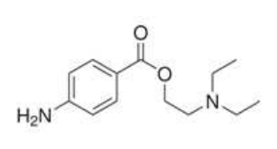
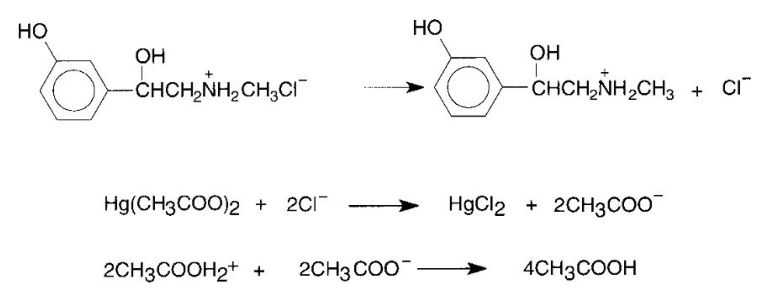
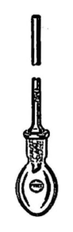
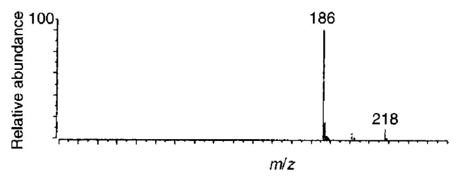

106 年第 1 次藥師藥物分析與生藥學試題與答案
這一頁是民國 106 年第 1 次藥師藥物分析與生藥學的整份歷屆試題，共 80 題，題目與標準答案出自考選部「國家考試試題及測驗式試題答案」開放資料。以下逐題列出題幹、選項與答案；要計時作答或記錄成績，請用線上練習。
考選部原始場次代碼：106020
線上作答這一科 →
全部 80 題
第 1 題
下列何者之含量測定法，非藉由酸反滴定所加入之過量鹼的方式？
- （A）aspirin
- （B）benzyl benzoate
- （C）chloral hydrate
- （D）zinc oxide
答案：（D）
第 2 題
在紅外光光譜分析中，下列四種官能基團的吸光強度（intensity of absorption）何者最強？
- （A）C–F
- （B）C–Cl
- （C）C–Br
- （D）C–I
答案：（A）
第 3 題
在分析藥物結構時，羰基（carbonyl group）的確認採用下列何種方法最適宜？
- （A）紫外光光譜法
- （B）紅外光光譜法
- （C）質譜法
- （D）原子吸收光譜法
答案：（B）
第 4 題
測定毛髮中的甲基汞（methyl mercury）含量時，下列何種方法最適用？
- （A）放射免疫分析法（radio-immunoassay）
- （B）原子吸收光譜測定法（atomic absorption spectrophotometry）
- （C）液相層析－電化學偵測法（liquid chromatography－electrochemical detection）
- （D）氣相層析－電子捕捉偵測法（gas chromatography－electron capture detection）
答案：（D）
第 5 題
利用質譜儀測定時，若扇形磁場儀器（magnetic sector instruments）的磁場強度與加速電壓固定時，則離子的質量(m/z)與離 子的飛行半徑的關係下列何者最適當？
- （A）與飛行半徑成正比
- （B）與飛行半徑成反比
- （C）與飛行半徑的平方成正比
- （D）與飛行半徑的平方成反比
答案：（C）
第 6 題
單溴取代化合物之質譜分子峰中[M]與[M+2]之強度比為何？
- （A）1:1
- （B）2:1
- （C）3:1
- （D）4:1
答案：（A）
第 7 題
下列何者為核磁共振光譜中代表化學位移的符號？
- （A）δ
- （B）I
- （C）m
- （D）J
答案：（A）
第 8 題
如圖為procaine之結構，下列有關敘述何者錯誤？

- （A）-COO-基團會降低苯環發色團之最大吸收波長
- （B）-COO-基團會增加苯環發色團之吸光強度
- （C）在酸性溶液下會降低其吸光強度
- （D）NH2基團為助色團（auxochrome）
答案：（A）
第 9 題
以毛細管電泳法分析R及S form的mepivacaine時，於背景電解質溶液0.1 M phosphate buffer（pH 3.0）中添加下列何者可獲得 最好的分離效果？
- （A）10 mM SDS
- （B）10 mM NaClO4
- （C）10 mM dimethyl β-cyclodextrin
- （D）10 mM tetrabutylammonium chloride
答案：（C）
第 10 題
進行腎上腺皮質激素（ACTH）及其分解產物的毛細管電泳分析時，在pH 3.8的緩衝液下，因滯留時間短而無法將產物波峰完 全分開；若欲以延長滯留時間來改善其分析效能，應調高下列何者最適合？
- （A）pH
- （B）溫度
- （C）電壓
- （D）離子強度
答案：（D）
第 11 題
滴定分析phenylephrine HCl的定量反應式如附圖，此滴定法為下列何者？

- （A）酸滴定法
- （B）非水滴定法
- （C）沉澱滴定法
- （D）EDTA螯合滴定法
答案：（B）
第 12 題
有關重量分析法的敘述，下列何者錯誤？
- （A）必須使用沉澱劑
- （B）可用於定量分析
- （C）沉澱物的化學組成必須清楚
- （D）能以簡單快速的方法將沉澱分離
答案：（A）
第 13 題
卡爾費雪（Karl Fischer）測定法加入甲醇最主要的目的為何？
- （A）將碘還原
- （B）與吡啶．三氧化硫結合
- （C）與碘化氫結合
- （D）氧化二氧化硫
答案：（B）
第 14 題
下列何者為非水滴定法中最常用的鹼？
- （A）NaOH
- （B）KOH
- （C）CH3ONa
- （D）NH3
答案：（C）
第 15 題
下列半反應在25℃時，何者的還原電位（Eo）最高？
- （A）Zn2+ + 2e- → Zn
- （B）Fe2+ + 2e- → Fe
- （C）Fe3+ + e- → Fe2+
- （D）MnO4 - + 8H+ + 5e- → Mn2+ + 4H2O
答案：（D）
第 16 題
下列何種鹽類一般作肉品保色劑使用，攝入過量時可能具致癌性，檢驗時可藉由加入稀礦酸使其產生棕紅色氣體而鑑別？
- （A）鐵氰化物
- （B）鐵鹽
- （C）汞鹽
- （D）亞硝酸鹽
答案：（D）
第 17 題
有關比重測定法之敘述，下列何者錯誤？
- （A）物質之比重係物質在空氣中之重量與同體積水重量之比值
- （B）一般測定以液體為多，氣體無法測定
- （C）若無特殊規定，中華藥典以25℃為標準測定溫度
- （D）Pycnometer係用來測定比重之裝置
答案：（B）
第 18 題
酸價等於0.1 N氫氧化鉀被樣品（油脂）消耗的毫升數乘以A值，再除以樣品之克數，其中的A值等於多少？
- （A）3.94
- （B）5.61
- （C）6.51
- （D）55.6
答案：（B）
第 19 題
下圖屬何種裝置（已含空氣冷凝管）？

- （A）卡爾費雪滴定管
- （B）喀西亞定量瓶
- （C）乙醯化反應瓶
- （D）定量瓶
答案：（C）
第 20 題
利用分析離子通過分析管時，相同質荷比（m/z）的斷片進行等速運動，進而決定其分子量之質譜儀分析器為下列何者？
- （A）magnetic analyzer
- （B）time-of-flight analyzer
- （C）ion trap analyzer
- （D）quadrupole analyzer
答案：（B）
第 21 題
Psoralen（MW = 186）的質譜分析結果如附圖所示時，其採用的離子化（ionization）方法最可能為下列何者？

- （A）positive ion chemical ionization
- （B）electron impact ionization
- （C）electrospray ionization
- （D）negative ion chemical ionization
答案：（D）
第 22 題
下列何者是氫核磁共振光譜芳香環氫訊號範圍（ppm）？
- （A）6.0～8.5
- （B）4.6～5.5
- （C）3.7～4.1
- （D）2.5～4.0
答案：（A）
第 23 題
在紅外光光譜中，H－O化學鍵的吸收訊號常出現在下列何種範圍？
- （A）900～1300 cm-1
- （B）1600～1800 cm-1
- （C）2000～2500 cm-1
- （D）3200～3500 cm-1
答案：（D）
第 24 題
在氫核磁共振光譜中，下列何者的甲基以雙峰（doublet）呈現？
- （A）CH3F
- （B）CH3OH
- （C）CH3NH2
- （D）CH3CH2OH
答案：（A）
第 25 題
在某化合物的 ESI-質譜圖中可觀測到m/z ＝283與285的分子離子訊號，其訊號強度比為100：4.5。則本化合物最可能含有下 列何種元素？
- （A）O
- （B）S
- （C）Cl
- （D）Br
答案：（B）
第 26 題
有關原子發散光譜測定法（atomic emission spectrophotometry, AES）的敘述，下列何者錯誤？
- （A）鈉原子發散光譜的主要波峰源自電子由激發態3p軌域回到基態3s軌域
- （B）中空陰極燈（hollow cathode lamp）為其光源
- （C）photosensitive cell為適合之偵測器
- （D）測定鈣、鈉、鉀所用的水必須經離子交換樹脂之處理
答案：（B）
第 27 題
波數40,000 ㎝-1落於下列那個輻射區域？
- （A）χ-ray
- （B）紫外光
- （C）紅外光
- （D）無線電頻率
答案：（B）
第 28 題
有關紅外光光譜分析法（IR spectrometry）之敘述，下列何者錯誤？
- （A）其觀察範圍在40至60 µm
- （B）係觀察分子內鍵結振動所吸收之能量
- （C）係觀察鍵結伸縮（stretching）或彎曲（bending）之振動情形
- （D）可獲得化合物之官能基訊息
答案：（A）
第 29 題
有關螢光光譜測定法之敘述，下列何者錯誤？
- （A）係測定激態電子返回基態所發散出之光
- （B）測定時透射光線與偵測器呈直角
- （C）激發光波長較放射光波長長50～150 nm
- （D）螢光法比吸光度測定法的靈敏度高
答案：（C）
第 30 題
依照PIC/s GMP規範，原料藥生產製程中需進行不純物確認分析，下列何者為較合適的分析方法？
- （A）電位滴定法
- （B）重量分析法
- （C）薄層層析法
- （D）紫外光光譜法
答案：（C）
第 31 題
有4支分離管柱，管柱甲：長10 cm理論板數18,000；管柱乙：長15 cm理論板數30,000；管柱丙：長20 cm理論板數32,000； 管柱丁：長25 cm理論板數48,000；則何管柱分離效能最佳？
- （A）管柱甲
- （B）管柱乙
- （C）管柱丙
- （D）管柱丁
答案：（B）
第 32 題
在層析法作定量分析選用的內部標準品（internal standard），下列何者錯誤？
- （A）安定性宜佳
- （B）其結構宜與分析物相似
- （C）其滯留時間應與分析物儘量遠離
- （D）與分析物不產生化學反應
答案：（C）
第 33 題
製備300 µg/mL之(S)-lansoprazole標準品甲醇溶液，取500 µL置入空白製劑中（固體製劑），再用1.2 mL甲醇萃取此樣品，過 濾後得1.5 mL，再用毛細管電泳定量，測得濃度為90 µg/mL，下列何者最接近此方法的準確度？
- （A）80%
- （B）85%
- （C）90%
- （D）95%
答案：（C）
第 34 題
有關氣相層析質譜儀的敘述，下列何者錯誤？
- （A）適合用於蛋白質藥物的分析
- （B）適合用於精油的分析
- （C）有龐大的資料庫可用於鑑定揮發性不純物
- （D）氣相層析質譜儀資料庫主要使用EI-MS所建構
答案：（A）
第 35 題
下列何項層析參數和層析峰的寬窄有最直接之關係？
- （A）理論板數（theoretical plates）
- （B）容量因子（capacity factor）
- （C）滯留時間（retention time）
- （D）對稱係數（asymmetry factor）
答案：（A）
第 36 題
下列何種游離源不適合與液相層析儀串聯使用？
- （A）電噴灑離子化（ESI）
- （B）電子撞擊離子化（EI）
- （C）大氣壓化學離子化（APCI）
- （D）大氣壓光子離子化（APPI）
答案：（B）
第 37 題
有關逆相層析法的敘述，下列何者正確？
- （A）矽膠為常用之充填劑
- （B）靜相的極性較動相低
- （C）動相之極性由低至高
- （D）靜相為巨孔樹脂
答案：（B）
第 38 題
下列何者非高效能液相層析法之偵測器？
- （A）UV-visible detector
- （B）fluorescence detector
- （C）electron capture detector
- （D）electrochemical detector
答案：（C）
第 39 題
下列有關液相層析參數之敘述，何者正確？
- （A）peak asymmetry factor大於1時，表示產生拖尾現象
- （B）若要完全分離兩個波峰，則兩者的capacity factor為1.5以上
- （C）若兩個化合物的滯留時間相同，則兩者的resolution為1
- （D）若兩個化合物的滯留時間相同，則兩者的selectivity（α）為0
答案：（A）
第 40 題
欲直接分析異構物 -alanine, -alanine，應選用下列何種靜相？
- （A）Pirkle phase
- （B）silica gel
- （C）ODS
- （D）ion-exchange resin
答案：（A）
第 41 題
下列何種中藥材之成分中含有生物鹼betaine及維生素riboflavine, thiamine, ascorbic acid等，始載於神農本草經，列為上品？
- （A）大棗
- （B）枸杞
- （C）胖大海
- （D）栝樓根
答案：（B）
第 42 題
Taxol可由下列何者製備而得？
- （A）baccatin III
- （B）procaine
- （C）salicin
- （D）stigmasterol
答案：（A）
第 43 題
有關pegylated protein之敘述，何者正確？
- （A）PEG的全名為polypeptide ethyl glycol
- （B）PEG與蛋白質結合，形成雙硫鍵的聚合物
- （C）pegademase為adenosine deaminase與PEG的共軛結合物
- （D）pegylated protein之半衰期比non-modified protein短
答案：（C）
第 44 題
下列何者為蛋白藥物的特點？
- （A）多為水溶性，適宜作成口服製劑
- （B）易受pH影響，不適合作成針劑
- （C）製劑中加入血清蛋白（albumin），減少蛋白藥物吸附在塑膠材質容器上
- （D）通常貯存在零下20℃，保持蛋白藥物穩定性
答案：（C）
第 45 題
下列何者為種子樹膠（seed gums）？
- （A）guaran
- （B）karaya gum
- （C）tragacanth
- （D）xanthan gum
答案：（A）
第 46 題
下列有關天麻之敘述何者錯誤？
- （A）所含gastrodin具中樞神經興奮作用
- （B）可袪風通絡
- （C）基原Gastrodia elata
- （D）使用部位為乾燥塊莖
答案：（A）
第 47 題
下列中藥與藥效之配對，何者錯誤？
- （A）辛涼解表－柴胡
- （B）清熱解毒－大青葉
- （C）清熱瀉火－黃芩
- （D）清熱涼血－熟地黃
答案：（D）
第 48 題
遠志主成分屬於那一類？
- （A）saponin glycoside
- （B）anthraquinone glycoside
- （C）cyanogenic glycoside
- （D）alcohol glycoside
答案：（A）
第 49 題
下列生藥成分何者非半合成類固醇藥物之原料？
- （A）diosgenin
- （B）sitosterol
- （C）gitogenin
- （D）platycodigenin
答案：（D）
第 50 題
下列何者可做為傷口癒合劑？
- （A）aloe vera gel
- （B）frangula
- （C）senna
- （D）rhubarb
答案：（A）
第 51 題
下列強心苷，何者不含葡萄糖基？
- （A）digitoxin
- （B）purpurea glycoside A
- （C）lanatoside A
- （D）scillaren A
答案：（A）
第 52 題
生藥和使用部位之配對，下列何者錯誤？
- （A）大蒜－種子
- （B）蒺藜－果實
- （C）黃耆－根
- （D）楊柳－樹皮
答案：（A）
第 53 題
下列有關番瀉的敘述，何者錯誤？
- （A）主要成分的aglycones為rhein dianthrone
- （B）口服後立即有瀉下作用
- （C）主成分為sennosides
- （D）其豆莢亦含有藥效成分
答案：（B）
第 54 題
下列那一個水解後不會產生葡萄糖？
- （A）salicin
- （B）alliin
- （C）sinigrin
- （D）arbutin
答案：（B）
第 55 題
下列何者在化學分類上屬於liquid wax？
- （A）coconut oil
- （B）olive oil
- （C）jojoba oil
- （D）linseed oil
答案：（C）
第 56 題
下列何者歸類為單不飽和油（monounsaturated oil）？
- （A）coconut oil
- （B）palm kernel oil
- （C）rapeseed oil
- （D）safflower oil
答案：（C）
第 57 題
下列何者屬於萜類（terpenoid）結構？
- （A）magnolin
- （B）chlorogenic acid
- （C）mongolicumin B
- （D）methyleugenol
答案：（C）
第 58 題
下列有關半夏之敘述，何者錯誤？
- （A）為有毒植物
- （B）不宜與烏頭合用
- （C）一般用於內服者需經炮製
- （D）屬Apocyaceae科植物
答案：（D）
第 59 題
Anethole主含於下列何者？
- （A）Pinus palustris
- （B）Cinnamomum cassia
- （C）Rosa gallica
- （D）Foeniculum vulgare
答案：（D）
第 60 題
下列生藥與成分之配對，何者錯誤？
- （A）Cinnamomum camphora－camphor
- （B）Chamaemelum nobile－(-)-α-bisabolol
- （C）Mentha piperita－forskolin
- （D）Tanacetum parthenium－parthenolide
答案：（C）
第 61 題
下列關於大麻之敘述，何者錯誤？
- （A）基原植物Cannabis sativa屬桑科
- （B）雄性大麻不含△9-tetrahydrocannabinol
- （C）Indian cannabis樹脂含量較Wisconsin hemp高
- （D）大麻與△9-tetrahydrocannabinol均可促進食慾
答案：（B）
第 62 題
下列配對中藥材中，何者係源自於真菌類？
- （A）肉蓯蓉與麥門冬
- （B）冬蟲夏草與何首烏
- （C）何首烏與麥門冬
- （D）冬蟲夏草與茯苓
答案：（D）
第 63 題
下列敘述何者正確？
- （A）五味子酸澀是因含鞣酸
- （B）五味子具中樞神經興奮作用
- （C）訶子為收澀藥
- （D）訶子主含木脂素
答案：（C）
第 64 題
下列關於echinacea之敘述，何者錯誤？
- （A）在美國曾充當淨血劑（blood purifier）
- （B）有效成分為khellin
- （C）具免疫提升作用
- （D）基原植物屬菊科
答案：（B）
第 65 題
下列何者非p-coumaric acid生合成途徑之中間物？
- （A）phenylalanine
- （B）tyrosine
- （C）shikimic acid
- （D）caffeic acid
答案：（D）
第 66 題
關於tannin之敘述，何者錯誤？
- （A）廣泛存在於植物界
- （B）為多酚類混合物
- （C）無法自tannin extracts中分離出單一成分
- （D）hydrolyzable tannins水解後可得到酚酸（phenolic acids）
答案：（C）
第 67 題
有關辛夷之敘述，下列何者正確？
- （A）使用部位為乾燥花蕾
- （B）來源植物之科名Rutaceae
- （C）神農本草經列為中品
- （D）辛夷散常用於感冒後期引起之全身酸痛
答案：（A）
第 68 題
關於生合成之敘述，下列何者錯誤？
- （A）萜類以acetate-malonate路徑生合成
- （B）單萜類生合成之中間物為geranyl pyrophosphate
- （C）cinnamaldehyde之生合成係經由shikimic acid路徑
- （D）倍半萜係由3個isoprene組成
答案：（A）
第 69 題
下列選項之藥材，何者主成分均屬於樹脂類？
- （A）黃精、蘆薈
- （B）沉香、補骨脂
- （C）乳香、沒藥
- （D）阿膠、杜仲膠
答案：（C）
第 70 題
吳茱萸為溫裏中藥，其使用部位為何？
- （A）根
- （B）莖
- （C）葉
- （D）果實
答案：（D）
第 71 題
關於馬兜鈴酸（aristolochic acid）之敘述，下列何者錯誤？
- （A）不存於關木通
- （B）存於細辛之地上部
- （C）不存於木通（Akebia Caulis）
- （D）連續使用會造成腎衰竭
答案：（A）
第 72 題
下列何種生物鹼成分屬alkaloidal amines？
- （A）quinine
- （B）colchicine
- （C）atropine
- （D）arecoline
答案：（B）
第 73 題
下列生藥何者主含benzophenanthridines類生物鹼？
- （A）Coptidis Rhizoma
- （B）Phellodendri Cortex
- （C）hydrastis
- （D）sanguinaria
答案：（D）
第 74 題
下列有關生物鹼之敘述，何者錯誤？
- （A）構造含有N原子
- （B）主存於植物界
- （C）常具生理活性
- （D）均具有鹼性
答案：（D）
第 75 題
下列何者非雙聚類生物鹼（dimeric alkaloids）？
- （A）sanguinarine
- （B）vincristine
- （C）tubocurarine
- （D）vinblastine
答案：（A）
第 76 題
服用下列何種生物鹼過量時，會導致暫時性聽覺喪失及視力不佳等症狀？
- （A）atropine
- （B）lobeline
- （C）cocaine
- （D）quinine
答案：（D）
第 77 題
秋水仙之使用部位為何？
- （A）花及果實
- （B）葉及莖
- （C）球莖及種子
- （D）果實及種子
答案：（C）
第 78 題
下列何種生藥具細長之圓柱狀根莖，其上附有環節狀之根？
- （A）glycyrrhiza
- （B）ipecac
- （C）sanguinaria
- （D）ginseng
答案：（B）
第 79 題
下列何者水解後之產物含ecgonine？
- （A）atropine
- （B）hyoscyamine
- （C）tropacocaine
- （D）cocaine
答案：（D）
第 80 題
下列生藥之基原植物學名，何者錯誤？
- （A）印度蛇根－Rauvolfia serpentina
- （B）金雞納皮－Cinchona succirubra
- （C）長春花－Catharanthus roseus
- （D）古柯葉－Theobroma cacao
答案：（D）
其他年度
回到藥師藥物分析與生藥學的年度總覽，
或到藥師題庫首頁看其他科目。
題目與標準答案出自考選部「國家考試試題及測驗式試題答案」開放資料。依中華民國《著作權法》第 9 條第 1 項第 5 款，
依法令舉行之各類考試試題不得為著作權之標的，得自由利用。詳解為 AI 整理的學習輔助，
並非官方標準答案；中華民國法規會修訂，引用前請對照現行版本查證。